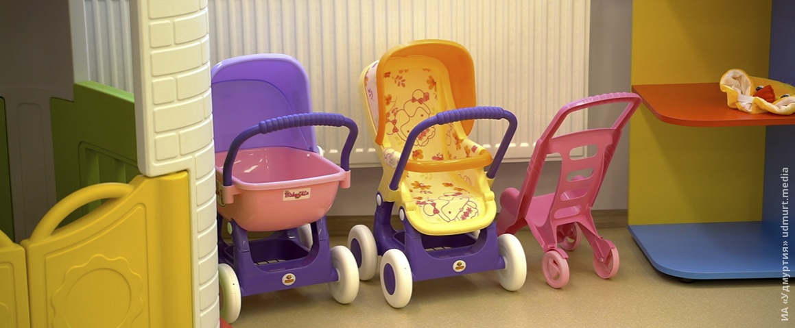

Welcome to Как получить возмещение НДС?
Получение компенсации | https://akcesmed.com/
2020.11.02 09:32
Интернет-магазин ортопедических изделий Russian +7 (495) 006-67-82 +7 (812) 629-67-82 8 (800) 350-21-82 WhatsApp +7 (926) 189-83-38 info@akcesmed.com О нас Каталог товаров Статические вертикализаторы Динамические вертикализаторы Реабилитационные кресла Многофункциональные устройства Специальные коляски Кресла для купания Системы BodyMap и Stabilo Полезные дополнения Получение компенсации Оплата и доставка Контакты (0) ( 0 ) Главная / Получение компенсации
Получение компенсации
В России любой инвалид, имеющий индивидуальную программу реабилитации, по закону обладает правом на бесплатное получение всех необходимых ему технических изделий, требуемых для прохождения реабилитации, протезирования и ортопедии. Такие средства обеспечивают необходимую степень независимости человека, имеющего проблемы со здоровьем.
Соответствующее право закреплено за гражданами правительственным постановлением №240 «О порядке обеспечения инвалидов техническими средствами реабилитации и отдельных категорий граждан (ветеранов) протезами и протезно-ортопедическими изделиями», прошедшим утверждение 07.04.2008 года.
В ситуациях, когда гражданин самостоятельно приобретает указанные технические средства, он вправе претендовать на возмещение понесенных материальных затрат через получение компенсации. Величина компенсации определяется уполномоченными органами в регионах, и может корректироваться с учетом изменения цен на установленную продукцию при проведении процедур конкурсной закупки аналогичных товаров.
Регулирование в сфере подобных компенсационных выплат осуществляется на основе ведомственного приказа №57Н «Об утверждении порядка выплаты компенсации за самостоятельно приобретенное инвалидом техническое
средство реабилитации и/или оказанную услугу, включая порядок определения её размера и порядок информирования граждан о размере указанной компенсации», принятого 31.01.2011 года.
Если человеку, в силу различных причин не подходит предлагаемое государством техническое средство, он имеет законное право на самостоятельную закупку искомой модели с получением в последующем компенсационной выплаты в размере, установленном нормативными документами. Единственное условие при этом, соответствие параметров приобретаемого средства с данными, внесенными в Индивидуальную программу реабилитации, утвержденную для пациента.
Необходимо указать, что для всех средств реабилитации предусматривается не только система классификации изделий, но и определяются предельно допустимые эксплуатационные сроки, после истечения которых, средства должны быть заменены на новые. Закрепление данных норм осуществляется на основе нормативов, прописанных в приказах Минтруда России от 24 мая 2013 г. № 214н «Об утверждении классификации технических средств реабилитации (изделий) в рамках федерального перечня реабилитационных мероприятий, технических средств реабилитации и услуг, предоставляемых инвалиду, утвержденного распоряжением Правительства Российской Федерации от 30 декабря 2005 г. № 2347-р» и Приказом Минтруда России от 24 мая 2013 г. № 215н «Об утверждении сроков пользования техническими средствами реабилитации, протезами и протезно-ортопедическими изделиями до их замены».
Получение компенсаций
Для получения установленных компенсационных выплат необходимо, чтобы приобретенное изделие было отражено в Индивидуальной программе реабилитации и соответствует установленным классификационным признакам. В противном случае может быть выдан отказ в выплате. Кроме того, целесообразно заранее выяснить сумму, которая может быть выплачена в качестве компенсации для указанного изделия.
Для получения компенсации требуется предоставление комплекта документов, включающего в себя:
Подтверждающие оплату товара чеки (кассовый + товарный); Паспорт товара (для отдельных категорий); Сертификат соответствия (ксерокопия); Заявление в письменной форме; Гражданский паспорт; Для лиц, не достигших 14 лет свидетельство о рождении + гражданский паспорт одного из родителей; Документ об инвалидности; СНИЛС; Индивидуальная программа реабилитации; Данные банковского счета для проведения перечисления средств.
Узнать размер компенсации
Определить величину будущей компенсации можно сделать здесь .
Более подробную информацию по оформлению документов и получению компенсации Вы можете узнать у наших специалистом по бесплатному телефону магазина 8 (800) 350-21-82.
Интернет-магазин ортопедических изделийМеню
О нас Получение компенсации Новости Оплата и доставка КонтактыКаталог
Статические вертикализаторы Динамические вертикализаторы Реабилитационные кресла Многофункциональные устройства Специальные коляски Кресла для купания Системы BodyMap и Stabilo Полезные дополнения +7 (495) 006-67-82 +7 (812) 629-67-82 8 (800) 350-21-82 WhatsApp: +7 (926) 189-83-38 info@akcesmed.com115088, г. Москва, улица Южнопортовая, д. 28А, стр.17
Copyright © 2018 akcesmed.com Все права защищены Политикa конфиденциальности Х